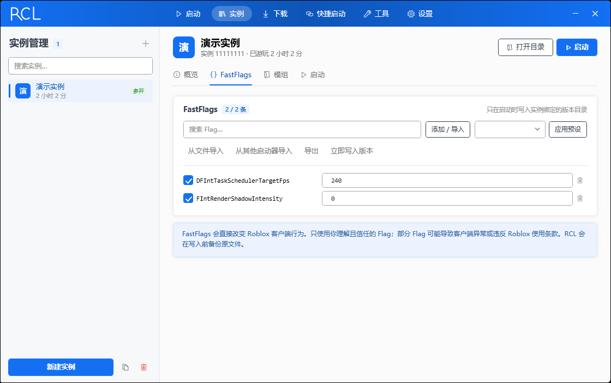
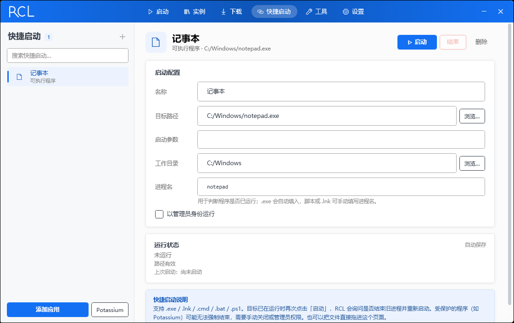

实例级隔离
每个实例拥有独立的版本绑定、FastFlags、模组与启动参数。主号、测试服、低配模式互不影响。
不是又一个只负责启动的壳。RCL 把版本、账号、配置和进程真正分开，再给它们一套 PCL2 的界面。
每个实例拥有独立的版本绑定、FastFlags、模组与启动参数。主号、测试服、低配模式互不影响。
单例互斥体配合目录联接槽位，让多个 Roblox 客户端同时在线。Voidstrap 已移除多开，RCL 保留并做成默认能力。
网页登录添加账号，Windows DPAPI 加密保存。切换账号后，之后启动的实例会自动使用对应的 Cookie。
JSON 粘贴或文件导入、常用预设，以及从 Bloxstrap / Voidstrap / Froststrap / Fishstrap 一键迁移。
读取 WEAO 的执行器支持版本，把实例锁到对应的 Roblox 版本，并按周期自动跟随更新。
exe、lnk、cmd、bat、ps1 都能放进来；读取真实图标、检测进程，重复启动前先问一句。Potassium 可一键添加。
透明圆角窗口、渐变标题栏、左侧页面栏和卡片布局。界面语言来自 PCL2，功能是自己的。
账号、实例和大按钮在同一屏。右侧是快速加入、最近游玩与本次启动日志，不用来回切页。

每个实例独立管理 FastFlags、模组、版本绑定和启动参数。JSON 导入、预设、从其他启动器迁移都在同一页。

把常用的 exe、脚本和 Potassium 放在一页。图标直接读取目标程序，重复启动会先确认，不会悄悄叠进程。
Windows 10/11 x64 · 单文件自包含 · 不需要单独安装 .NET 运行时。源码与构建产物都在 GitHub。
Releases 由 GitHub Actions 构建；如果暂时没有可用构建，请使用下方源码命令自行发布。
git clone https://github.com/z416946520/RCL-Roblox-Can-Launcher.git
cd RCL-Roblox-Can-Launcher
dotnet publish RCL/RCL.csproj -c Release -r win-x64 --self-contained true `
-p:PublishSingleFile=true `
-p:IncludeNativeLibrariesForSelfExtract=true `
-p:EnableCompressionInSingleFile=true `
-o dist/RCLRCL 是独立实现的启动器。下面这些边界说清楚，比在运行时猜要好。
RCL 使用 PCL2 的界面语言与交互结构，是独立的 Roblox 启动器，不包含 PCL2 的代码或资源，也不代表 PCL 官方。
不会覆盖 Roblox 安装。RCL 读取本机版本目录，可选接管 roblox:// 链接；接管前的处理程序会备份，可随时恢复。
不会。账号 Cookie 用 Windows DPAPI 加密保存在本机；Discord 与更新只使用你配置的 App ID 和更新地址。
Discord Application ID 属于你的 Discord 应用，更新源属于你的发布空间。RCL 不内置第三方身份，也不依赖某个固定的更新服务器。
当前版本只启动 Player。Studio 的启动、模组与 RPC 支持在路线图中，尚未实装。
RCL 不注入 Roblox 进程，只负责启动、版本隔离与配置。执行器与 FastFlags 的风险由使用者承担，请遵守 Roblox 的使用条款。